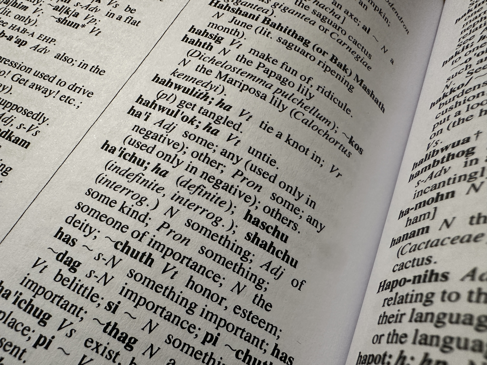

Research Interests
I specialize in phonology, semantics, and language revitalization. My work focuses on
reduplicative morphology in O'odham, combining formal linguistic theory with community-based
research and pedagogy.

Reduplication, Phonology & Semantics
I analyze the phonological and semantic properties of O'odham reduplication and argue that
these forms are derived through infixation rather than ambiguous affixation processes.
My work introduces the Reduplicative Pathway, a model in which phonological
form is reshaped through constraint re-application driven by semantic derivation, while
semantic output depends on the base form’s syntactic category.
Indigenous Linguistics
I frame this work within Indigenous Linguistics, a framework that positions
linguistic research at the intersection of speech communities and academic theory.
In this model, Indigenous axiologies, epistemologies, and ontologies and theoretical
linguistics inform one another in a mutually beneficial, bidirectional relationship—
addressing linguistics’ extractive history while producing rigorous analytical insights.

Language Documentation & Education
My community-based work includes supervising a two-year language documentation project
that produced a 2,000-word dictionary and a 130-lesson heritage learner curriculum.
I also designed the first O'odham language teacher certification exam for Arizona state
certification and developed transferable virtual language courses from elementary through
advanced levels for Tohono O'odham Community College.